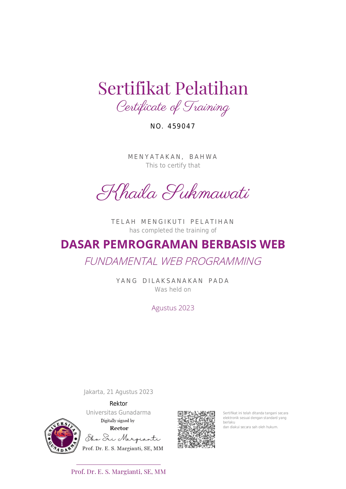
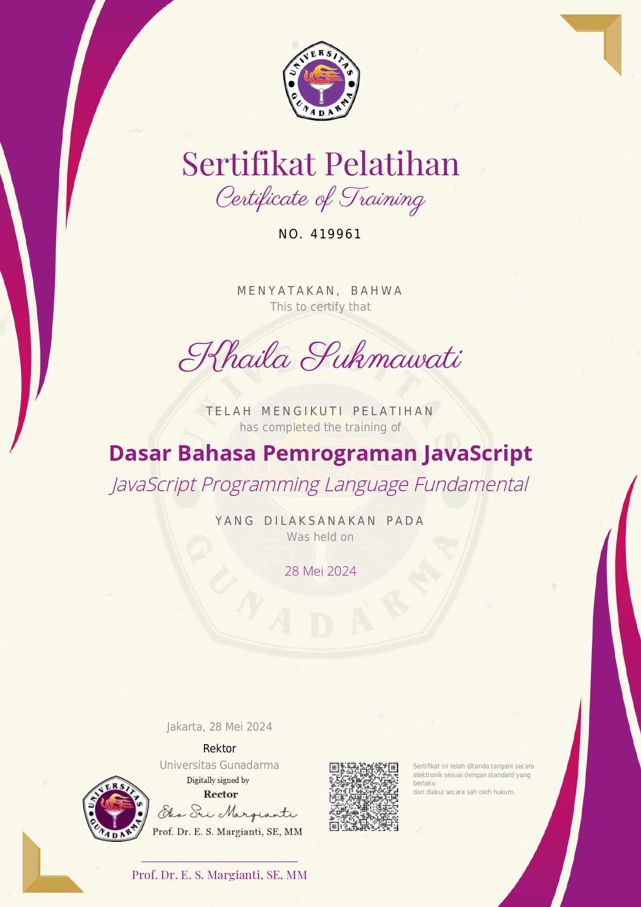
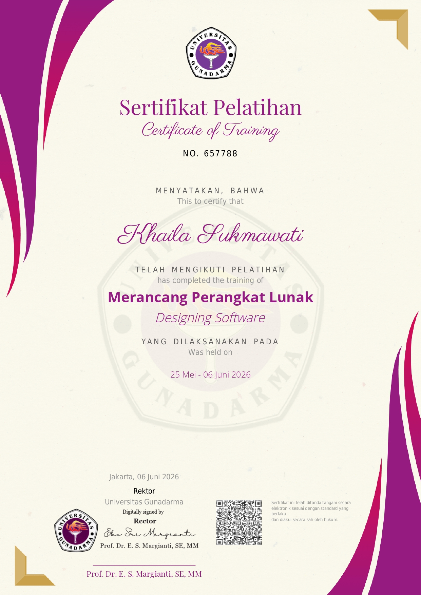
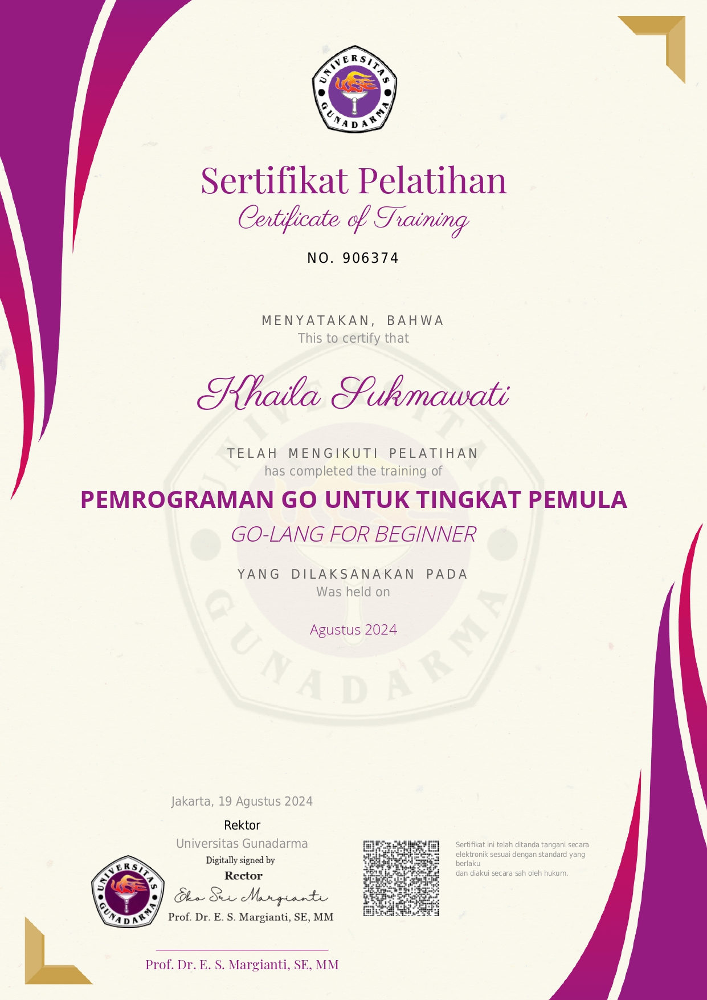
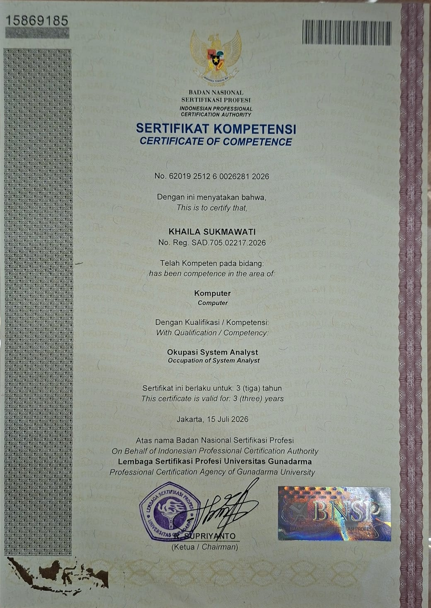

Web Application | Business Process Analysis
Inventory Management System
A web-based inventory management system designed to streamline stock management, track incoming and outgoing goods, monitor product availability, and generate inventory reports.
Open to Work · System Analyst | Business Analyst
Undergraduate Student, Bachelor of Information Systems, Gunadarma University (2022-2026)
Hi, I’m Khaila, an Information Systems graduate from Universitas Gunadarma (GPA 3.79/4.00) and a BNSP-certified System Analyst. I’m most interested in the work that happens before any code is written: understanding how a business really operates, finding where the actual problems are, and turning them into clear requirements.
In my projects, I’ve modeled business processes with UML and BPMN, written SRS and SDD documents, designed databases, and validated systems through Black Box Testing and UAT. My thesis was a web-based POS and stock forecasting system built with Laravel and MySQL, using Single Exponential Smoothing to predict demand.
I'm always eager to learn, strengthen my analytical and problem-solving skills, and explore how technology can help businesses work more effectively.
MY EXPERTISE
System Modeling · Use Case · UML · Functional Requirements
Requirement Gathering · Business Process Analysis · User Needs Analysis
SRS · SDD · Requirement Documentation
SQL · Database Design · Data Analysis
Microsoft Office
Draw.io
Figma
MySQL
Laravel
PHP
MY WORK
A selection of projects that reflect my experience in system analysis, software development, and digital solutions.
Web Application | Business Process Analysis
A web-based inventory management system designed to streamline stock management, track incoming and outgoing goods, monitor product availability, and generate inventory reports.
System Analysis | System Document
A software documentation project covering requirements analysis, system workflows, UML modeling, database structure, and UI design.
Web Application
An enhancement of an inventory management system with sales transaction features and stock forecasting using the Single Exponential Smoothing method.
MY QUALIFICATIONS
A collection of certifications and training programs reflecting my knowledge and competencies in Information Systems, Software Development, and System Analysis.

Web Development
Learned core web development concepts including HTML, CSS, and basic programming logic.
View Certificate ↗
Web Development
Participated in a hands-on workshop to strengthen JavaScript skills and build interactive web projects.
View Certificate ↗
System Analysis
Completed professional training in software design covering software structures, components, UI, and UX.
View Certificate ↗
Programming
Learned Go programming fundamentals and web development using Polymer, including data structures, routing, web servers, and JSON.
View Certificate ↗System Analysis
Gained skills in analyzing and documenting software requirements to support effective system design and development.
View Certificate ↗
GET IN TOUCH
I'm open to opportunities in System Analysis, Business Analysis, and IT & Digital Transformation. Feel free to reach out for professional opportunities or collaboration.